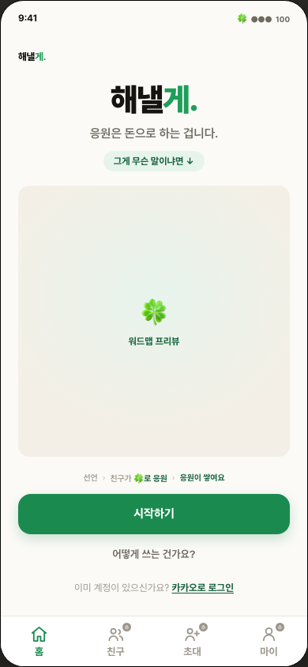
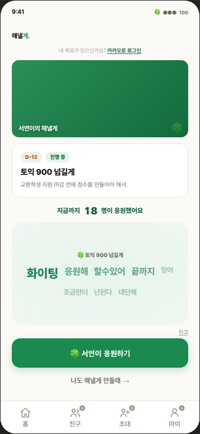
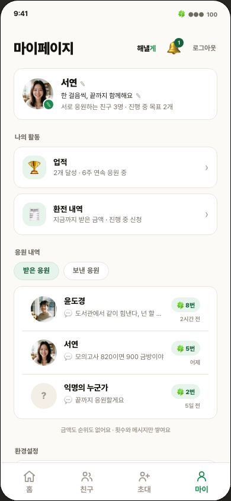
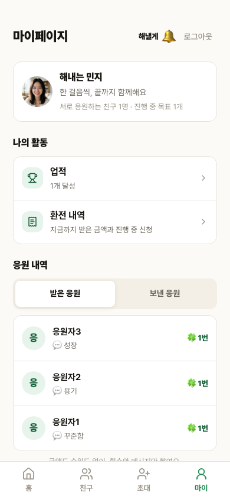
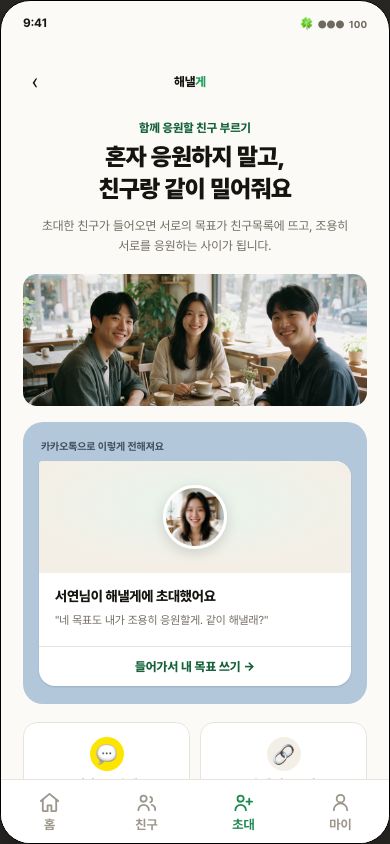
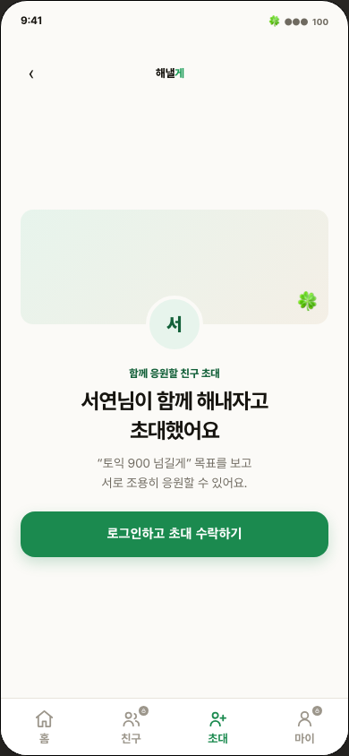
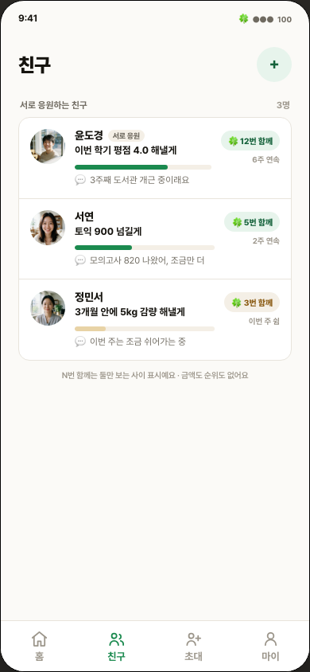
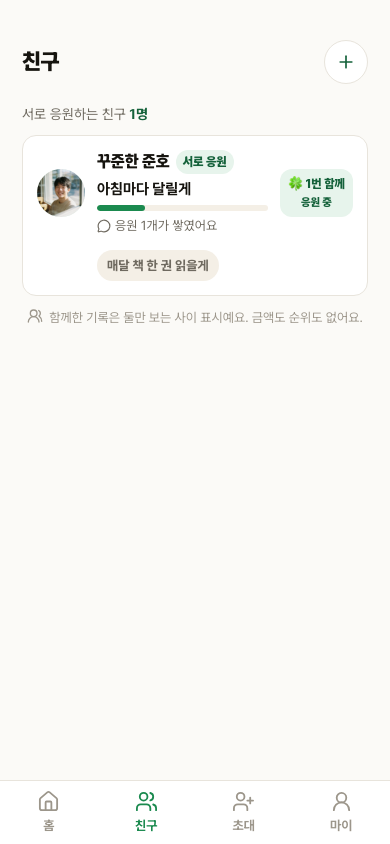
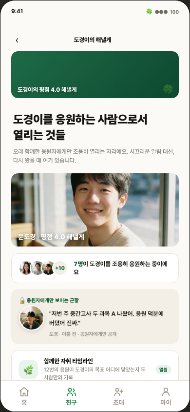
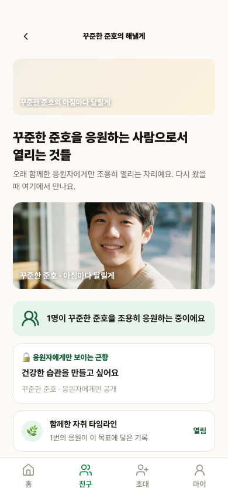

1. 비회원 랜딩 landing일치
브랜드 헤더, 메시지 미리보기, 설명, 공개 워드맵, 카카오 CTA의 순서와 위계를 맞췄습니다.
승인 시안 390px

로컬 구현 390px

2. 공개 목표 goalpublic일치
프로필, 공개 목표 카드, 진행률, 응원 CTA, 워드맵, 잠금 하단탭 구조를 맞췄습니다. 이름과 집계값은 로컬 fixture의 실제 값입니다.
승인 시안 390px

로컬 구현 390px

3. 마이페이지 mypage일치
프로필, 내 목표, 개별 응원 목록, 업적, 친구 목표 순서를 승인 시안에 맞췄습니다.
승인 시안 390px

로컬 구현 390px

4. 초대 생성 connect일치
뒤로가기와 중앙 브랜드, 선택된 목표의 실사 미리보기, 초대 링크 생성, 공유 액션 구조를 맞췄습니다.
승인 시안 390px

로컬 구현 390px

5. 초대 수락 inviteaccept일치
승인 프로토타입에 추가한 기준 화면과 동일하게 뒤로가기, 브랜드, 초대자 아바타, 목표 카드, 수락 CTA를 배치했습니다.
승인 시안 390px

로컬 구현 390px

6. 친구 목록 friends일치
친구 단위 행, 프로필, 목표, 진행률, 활동 메타데이터의 구조를 맞췄습니다. D-022에 따라 존재하지 않는 연속 기록은 만들지 않았습니다.
승인 시안 390px

로컬 구현 390px

7. 친구 상세 belong일치
친구명 헤더, 실사 프로필, 목표 카드, 진행 타임라인, 응원 현황, 다른 목표의 정보 위계를 맞췄습니다.
승인 시안 390px

로컬 구현 390px
